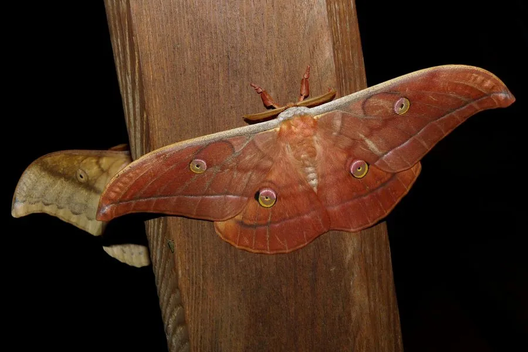

昆虫 · 动物界
天蚕 Antheraea yamamai

吐天然绿色丝的野生天蚕蛾，幼虫取食栎类，成虫翅面有大型眼斑，原产日本，是东亚珍贵的绢丝昆虫。
- 分类
- 门节肢动物门纲昆虫纲目鳞翅目科天蚕蛾科属柞蚕属
- 栖息环境
- 栎类阔叶林与山地柞林，幼虫在栎树上生活
- 地理分布
- 日本为主产地，中国部分地区有分布和引种放养
- 保护级别
- 暂无评估；野生种群受栖息地减少影响
物种志
天蚕成虫翅展约 12–15 cm，体粗壮，翅面黄褐至红褐色，各翅中央有大型眼斑，眼斑中央呈月牙状透明，边缘镶黑紫色和橙黄色环纹，十分醒目；幼虫绿色，体表有瘤突，取食栎类叶片。触角羽状，体表密被绒毛。
幼虫取食麻栎、栓皮栎等栎类植物，在树上化蛹越冬，一年发生一代。成虫多在夜间活动，寿命仅数天，主要靠幼虫期积累的营养完成交配产卵。天蚕茧丝呈天然的淡绿色，光泽柔和，产量低、价格高，被视为丝中珍品。它原产日本，中国部分地区也有分布和引种放养，人工饲养需要适宜的栎林和温湿度条件。由于野生种群数量减少，天蚕的种质资源保护受到关注。
形态与习性
- 食性幼虫取食麻栎、栓皮栎等栎类叶片
- 翅展约 12–15 cm
- 生活史一年一代，以蛹越冬
- 蚕丝茧丝呈天然淡绿色，产量低、价格高
- 成虫夜间活动，寿命仅数天，不取食
- 分布原产日本，中国部分地区有分布和放养
趣味知识
- 天蚕吐出的丝天然呈淡绿色，不需要染色，被称为丝中珍品。
- 天蚕蛾成虫寿命只有几天，羽化后主要任务是交配产卵。
- 天蚕的幼虫在栎树上生活，人工放养需要成片的柞林。